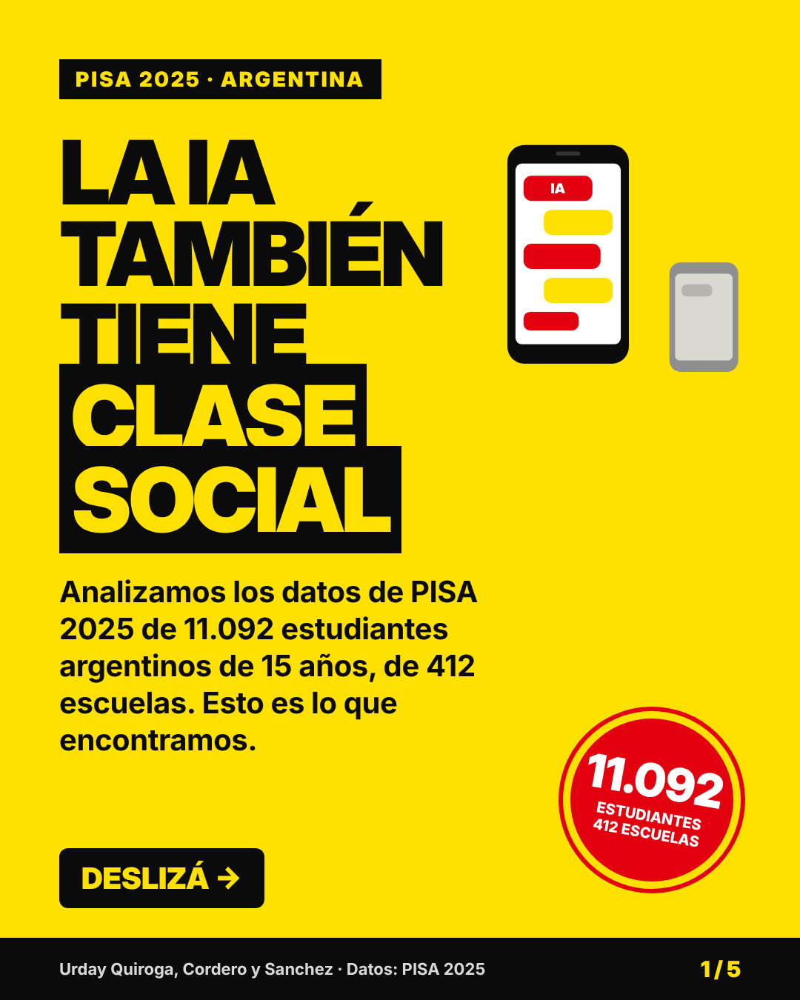
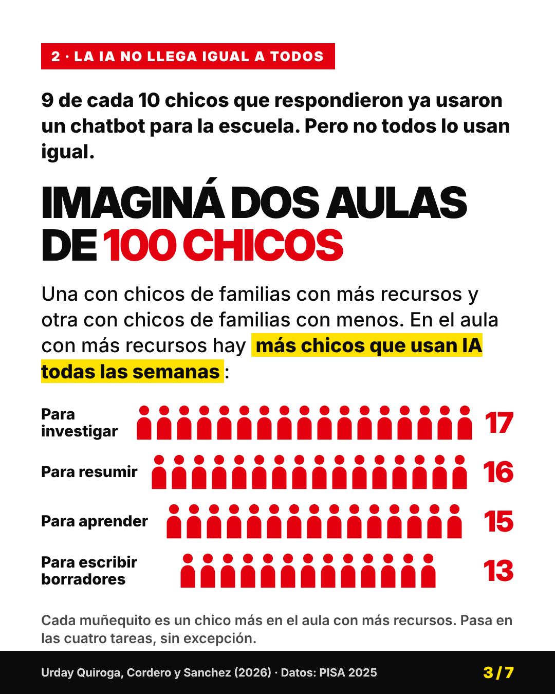
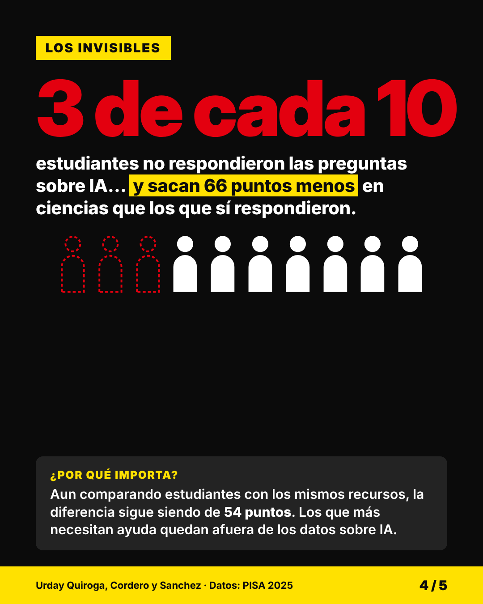
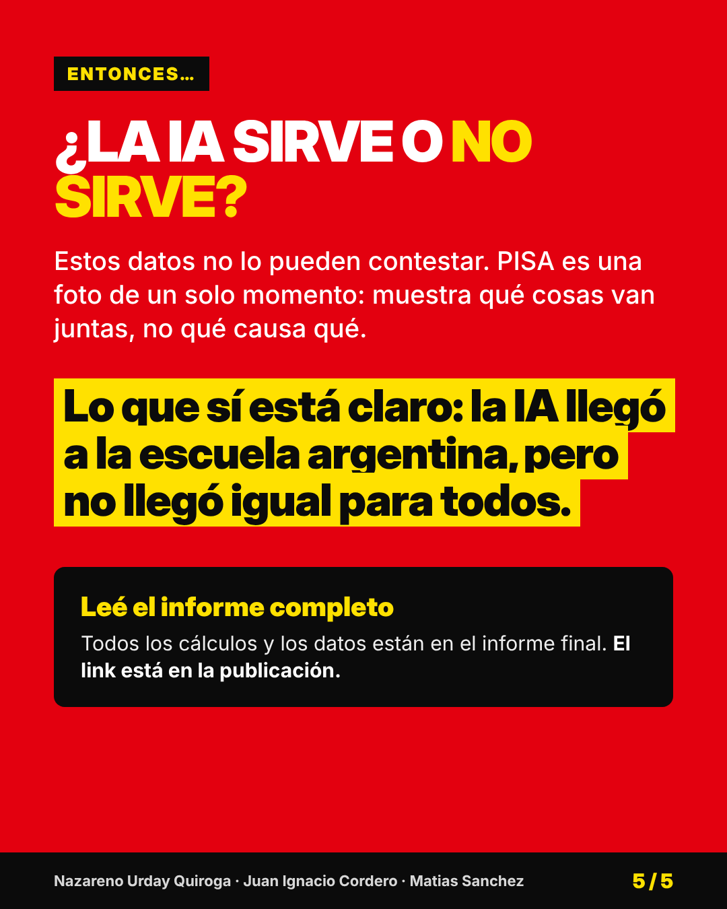

NU
Nazareno Urday QuirogaAhora
¿La inteligencia artificial mejora las notas de los estudiantes?
Analizamos los datos de PISA 2025 de 11.092 estudiantes argentinos de 15 años. La pregunta de fondo resultó ser otra… ver más
Analizamos los datos de PISA 2025 de 11.092 estudiantes argentinos de 15 años. La pregunta de fondo resultó ser otra… ver más




RecomendarComentarCompartirEnviar